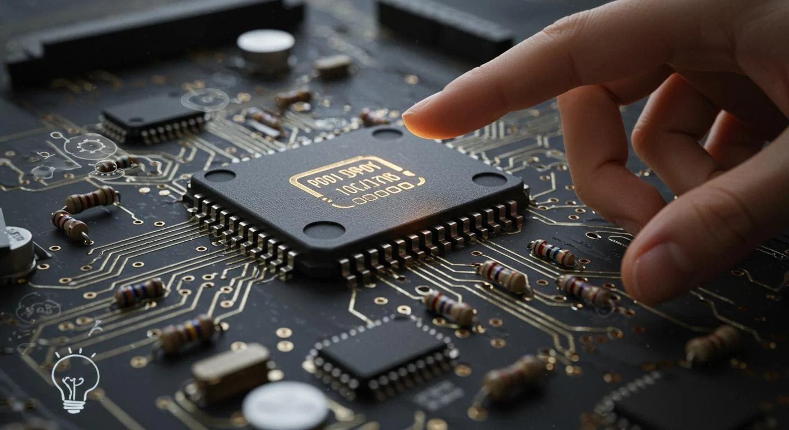

CIRCULAR FINANCE - 3STEPIT
The bank partnering that scales circular IT
3stepIT provides end-to-end IT lifecycle management. By combining leasing with refurbishment and reuse, it turns used devices into a source of recurring revenue.
Explore case